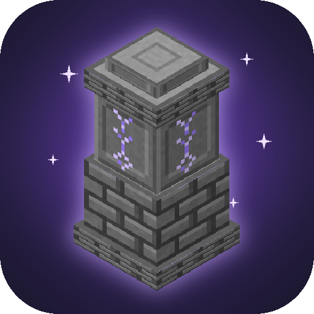
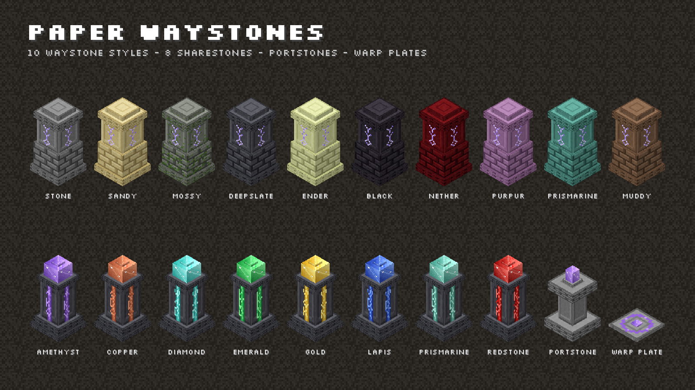
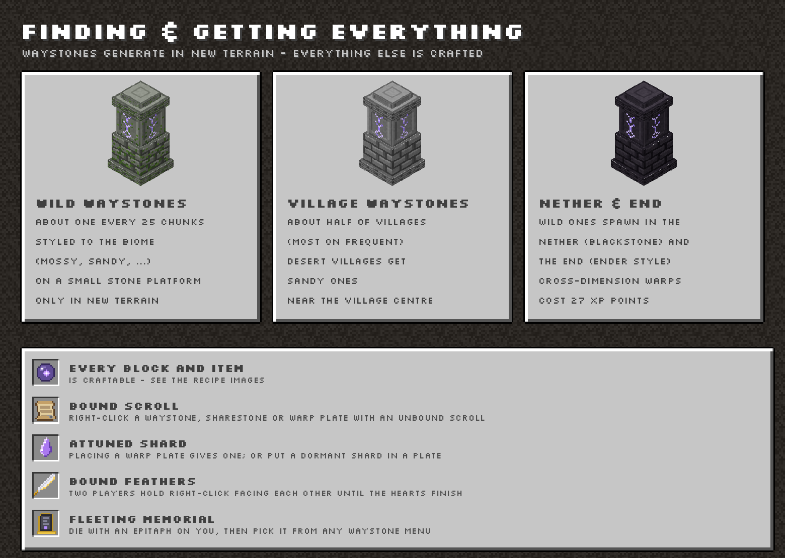
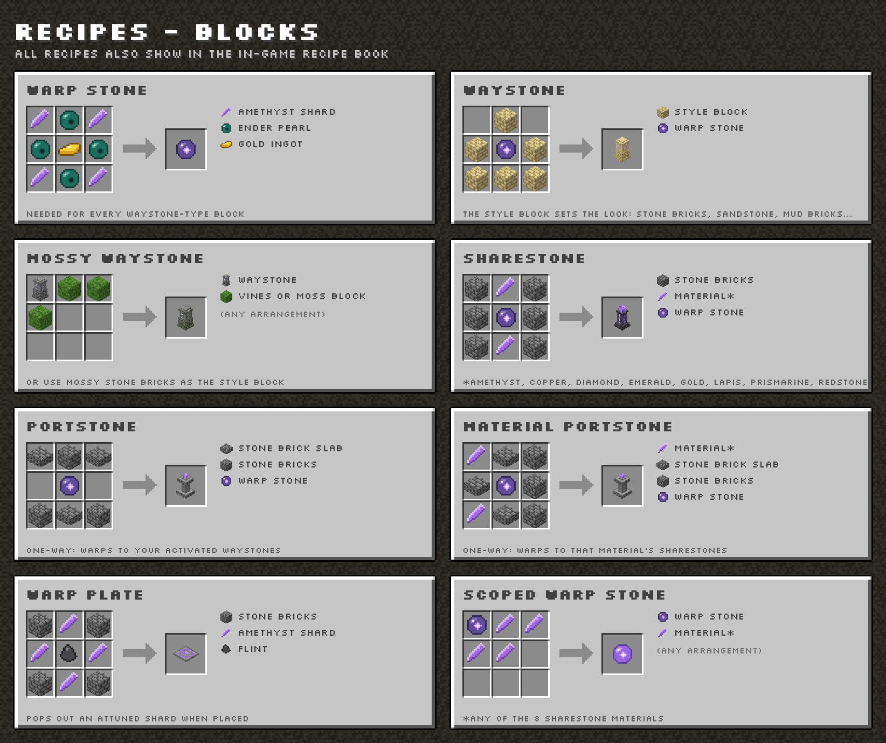
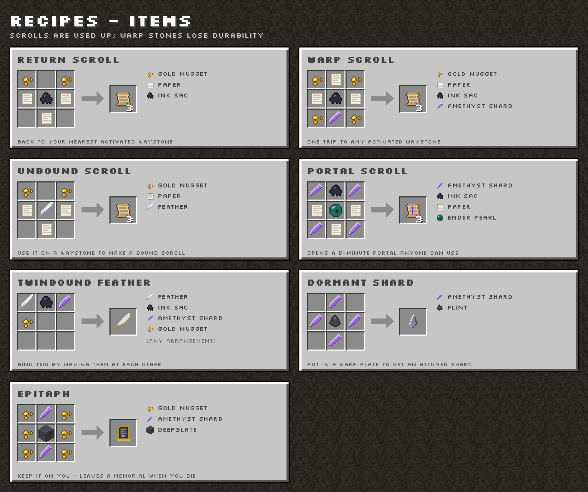

Minecraft plugin · PaperPaper Waystones.
Waystones for Paper servers, with no client mods. Activate them, name them, warp between them. Players get a small resource pack automatically.
Free · Paper 1.21.4 – 26.3 · MIT licence · Fan project inspired by the Waystones mod, not affiliated with it
What it does.
Waystones
Ten styles. Right-click to activate, again to pick a destination. Rename them, set who can see them, add modifiers.
Sharestones & portstones
Sharestones link to every stone of the same material, no activation needed. Portstones are one-way.
Warp plates
Stand on one to warp to a linked plate. Players, mobs and dropped items all travel; link plates with attuned shards.
Scrolls & warp stones
Single-use scrolls, a 5-minute Portal Scroll anyone can walk through, and reusable warp stones.
Found in the world
Wild waystones about every 25 chunks, styled to the biome, and in villages. Everything is craftable too.
Costs & extras
XP costs and cooldowns, pets and leashed mobs come along, favourites, Twinbound Feathers and Epitaphs.
Pictures.








Setup.
Download
Get the latest .jar from the releases.
Install
Drop it into your Paper server's plugins folder.
Restart
Restart the server. Players get the resource pack when they join.
Explore
Waystones generate in new chunks. For explored areas, admins can use
/waystones place.